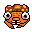
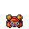
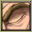
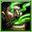
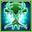
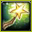
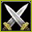
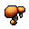
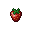
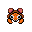

Pokédex / #046

Paras #046
BugGrass
Growing out of the bug's back are mushrooms called tochukaso. The mushrooms grow with the bug host.
Generation 1 · Kanto

Stats
| Attack | 70 | |
|---|---|---|
| Defense | 55 | |
| Sp. Atk | 45 | |
| Sp. Def | 55 |
In the wild
| Wild level | 5–15 |
|---|---|
| HP | 35 |
| Experience | 12 |
| Egg groups | Bug, Grass |
Evolution
- Evolves into Parasect at level 24.
Moves
| Level | Move | Type | Category | Power | Energy | Cooldown | Effect | |
|---|---|---|---|---|---|---|---|---|
| 1 | Tackle | Normal | Physical | 15 | 15 | 1s | Tackle is one of the most common and basic moves a Pokemon learns. It deals damage with no additional effects. | |
| 1 | Scratch | Normal | Physical | 40 | 40 | 6s | Scratch inflicts damage and has no secondary effect. | |
| 6 | Stun Spore | Normal | Status | – | 55 | 10s | Stun Spore paralyzes the target. | |
| 6 | Poison Powder | Poison | Status | – | 30 | 20s | Poison Powder poisons the target. | |
| 11 | Absorb | Grass | Special | 20 | 35 | 5s | Absorb deals damage and the user will recover 50% of the HP drained. | |
| 17 | Fury Cutter | Bug | Physical | 40 | 40 | 12s | Fury Cutter deals damage and has no secondary effect. | |
| 22 |  | Spore | Normal | Status | – | 65 | 100s | Spore puts the target to sleep. |
| 27 | Slash | Normal | Physical | 70 | 70 | 11s | Slash deals damage and has an increased critical hit ratio. | |
| 38 |  | Giga Drain | Grass | Special | 75 | 95 | 12s | Giga Drain deals damage and the user will recover 50% of the HP drained. |
| 43 |  | Aromatherapy | Grass | Status | – | 120 | 60s | Aromatherapy cures the user and friend's of sleep, poison, paralysis, freeze and burn. |
| 49 |  | Rage Powder | Bug | Status | – | 90 | 25s | Rage Powder redirects all single-target opponents to itself. |
| 54 |  | X-Scissor | Bug | Physical | 80 | 90 | 18s | X-Scissor deals damage and has no secondary effect. |
Field abilities
DigCut
Special abilities
Effect SporeDry Skin
Egg moves
AgilityBug BiteCounterCross PoisonEndureFell StingerFlailLeech SeedMetal ClawNatural GiftPsybeamPursuitRototillerScreechSweet ScentWide Guard
Technical machines
Aerial AceBeBody SlamBrick BreakBullet SeedDouble EdgeDouble TeamFury CutterGiga DrainLight ScreenMega DrainMimicRageReflectRestSkull BashSludge BombSolar BeamSubstituteSwords DanceTake DownToxic
Drops
| Item | Amount | Chance | |
|---|---|---|---|
| bottle of poison | 1–3 | 66.7% | |
 | mushroom | 1 | 19% |
| venom pendant | 1 | 13.3% | |
 | strawberry | 1–3 | 5% |
 | paras doll | 1 | 0.1% |